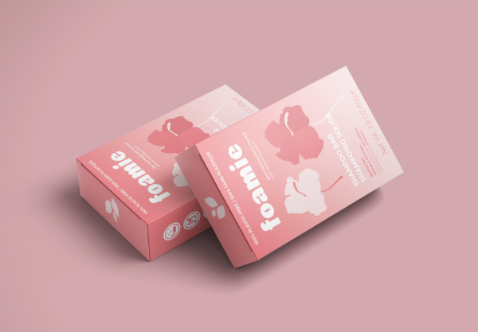
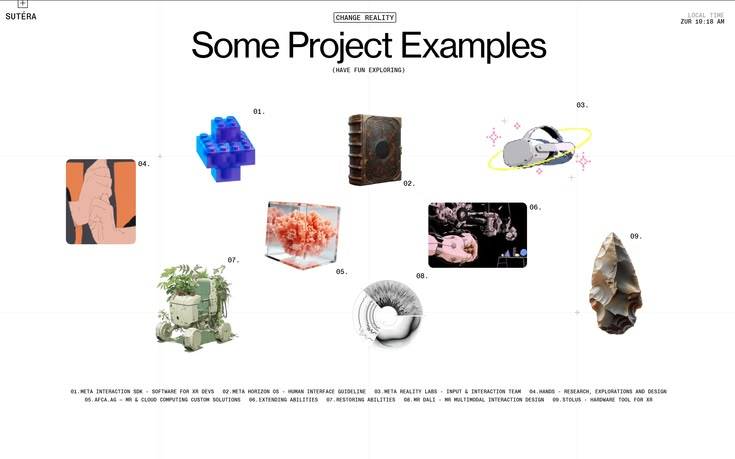
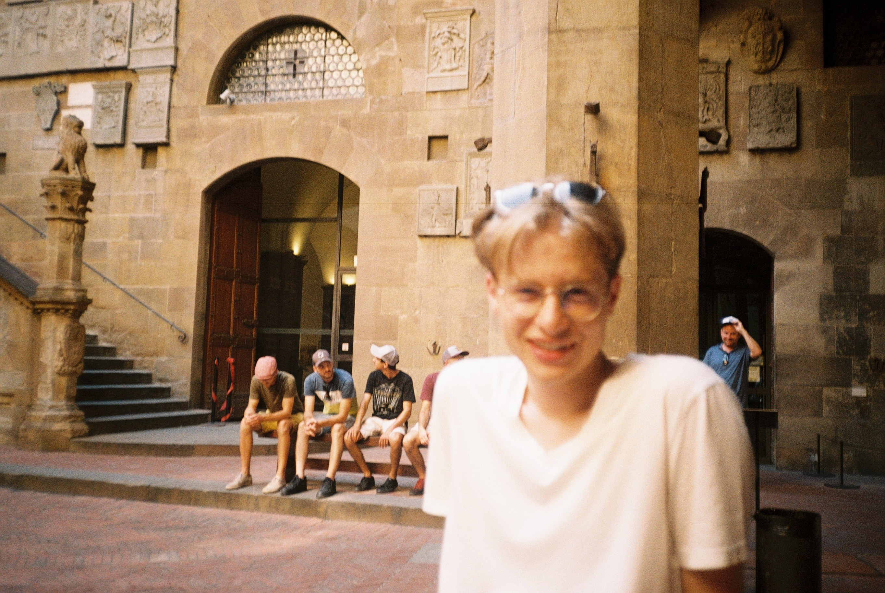
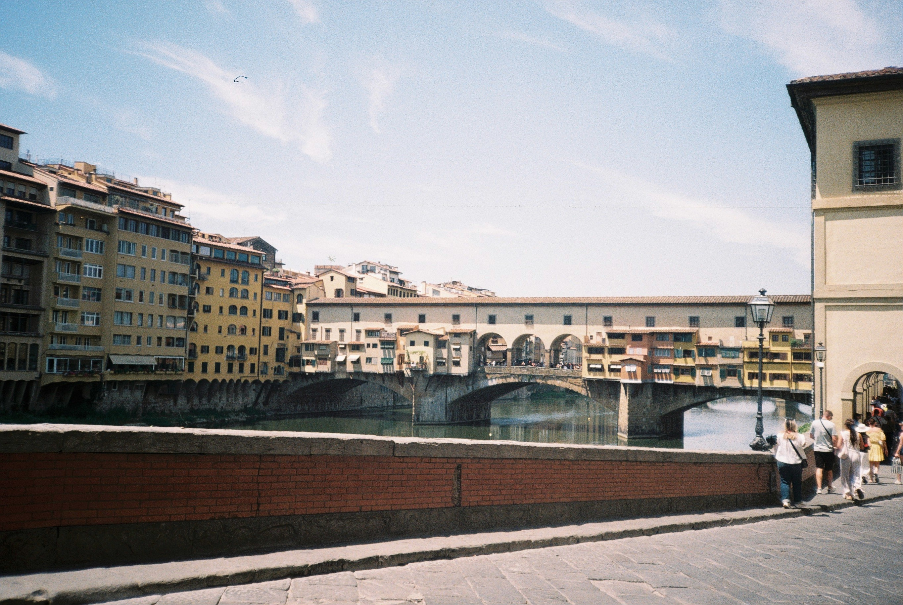
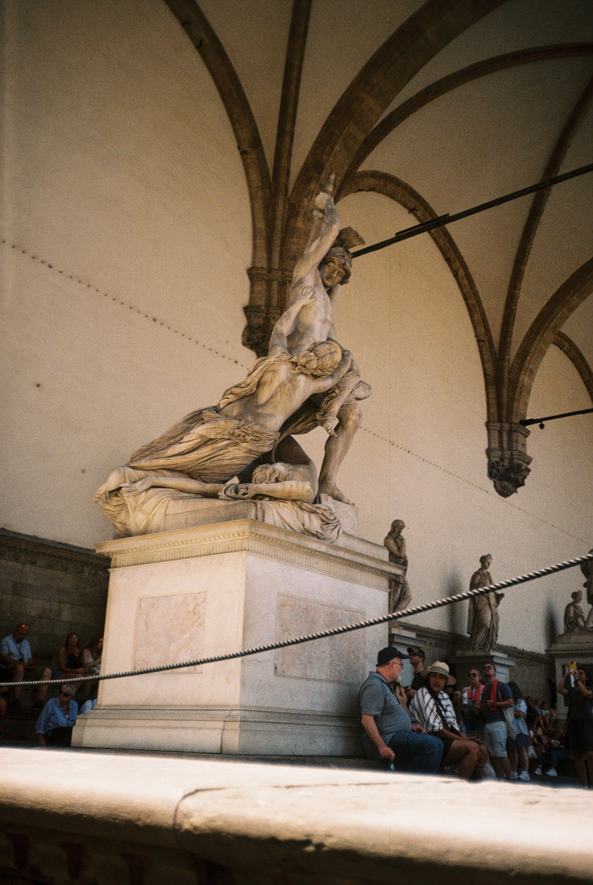

hola!, bienvenidx a mi portfolio
Mis proyectos se concentran en...

branding editorial design
editorial design

web design
photography


Construyo identidades suaves, sensibles y llenas de intención.
